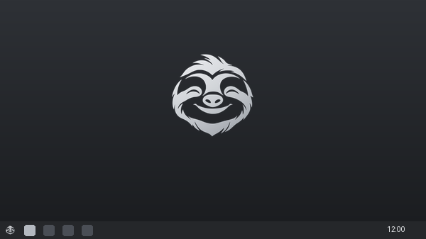

Sloth Silver Dark
Graphite surfaces, soft silver highlights, and restrained blue links give the default desktop its calm, familiar feel.
See what to expectFedora Atomic · KDE Plasma
A Linux desktop for everyday use and gaming, designed to feel at home from the first boot. Sloth OS pairs KDE Plasma with its own silver sloth identity and a Windows-style layout.
Sloth OS is a pre-release project. There is no public ISO yet; real-machine validation is still in progress.

KDE PlasmaWindows-style layout, Sloth OS look-and-feel
Atomic updatesKeep a previous system deployment to roll back
Windows programsPer-app setup is experimental and still being tested
THE PRINCIPLE
I’m building Sloth OS on my own. Everyday tasks should be available from the desktop, without asking people to learn command-line tools. If the terminal is required, I still have work to do.
The Sloth OS look
The default desktop uses the Sloth Silver Dark colour scheme: graphite surfaces, soft silver text and highlights, and restrained blue links. The source also includes light, white, black, night, mist and sage variations.
Graphite surfaces, soft silver highlights, and restrained blue links give the default desktop its calm, familiar feel.
See what to expectA Windows-style taskbar and start menu, built as a KDE Plasma look-and-feel package.
What to expectSloth OS is built on Fedora Atomic. Updates are applied as a system image, with a previous deployment available for rollback.
How updates workWindows program support
The project is building an .exe and .msi handler that tries compatible settings per program using Proton via umu-launcher, with system Wine as a fallback. Compatibility is experimental; some apps and games will not work.
How it works and where it falls shortYour choice, always
If enabled, Sloth OS reports a local hash of the app name, the GPU manufacturer, a compatibility setting, the outcome, and a random machine ID. The app name itself is not sent. Sharing can be changed in Sloth Center.
Read the privacy details✓ Opt-in sharing
✓ No files or usage times
✓ Downloads are separate from reports
Development preview
The roadmap still calls for real-hardware validation and release preparation. There is no public ISO download today, so this site does not offer a download link.
Read the tester guideThe useful details